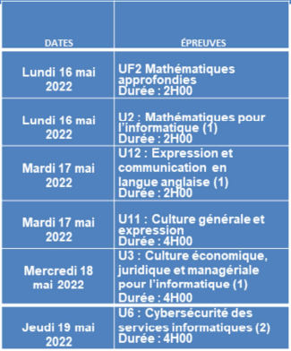

BTS SIO SLAM
Cette rubrique contient des documents généraux relatifs à votre deuxième année de BTS SIO SLAM.

- Schéma directeur de l'année 2021-2022
- Fiche à renseigner, préparatoire à la rédaction de la convention de stage : fiche-infovierge (docx) - fiche-infovierge (pdf)
- Modèle d'attestation de stage
Calendrier des épreuves nationales
Calendrier des épreuves informatiques en CCF : (à venir - premières semaines d'avril).
Épreuve E4
- Présentation de l'épreuve E4 (pdf)
- Contenu du dossier à constituer
- Chemise avec vos informations en entête (à venir)
- Votre portfolio : voir ici quelques idées de preuves de réalisations à intégrer (pdf)
- Veille technologique : document
- Tableau de synthèse à compléter
- Attestation de présence en entreprise (pour les aternants) : Attestion de présence (docx)
Épreuve E5
- à venir